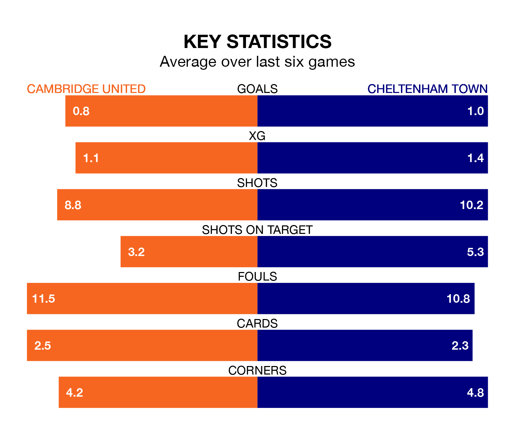

Cheltenham Town make the journey to the Abbey Stadium to play Cambridge United on Saturday looking to pick up points to end their three-game losing streak.
Cheltenham's struggles have left them with just four points from their last six EFL League One matches, while their opponents have earned eight from a possible 18.
Cheltenham are 23rd in the table after 28 games, of which they have won six and drawn five, earning 23 points.
Cambridge are seven places ahead of Town in 16th, with nine wins and eight draws putting them on 35 points.
In the last 10 years, Cambridge and Cheltenham have played each other on 14 occasions. Cambridge won four of them, Cheltenham six, and they drew four times.
On average, Cambridge scored 1.4 goals and the Robins 1.2 in those matches.
Their last meeting was on October 21, when Cheltenham won 1-0 at home.
With 21 goals in 28 games so far this season, the Robins are the league's joint-second-lowest scorers with 0.8 goals per game. And they are conceding more than average, letting in 40 goals at a rate of 1.4 per game.
United are also below average scorers, with 0.9 goals per game, compared to a league average of 1.3. They have conceded 1.2 goals per game.
Cambridge's last match was on February 3, a 2-1 win against Shrewsbury Town, with Lyle Taylor getting the goals for Cambridge.
Cheltenham lost 3-1 against Wycombe Wanderers last time out, also on February 3, with Matt Taylor on the scoresheet.
Updated: 11:43 (UTC), 08/02/24